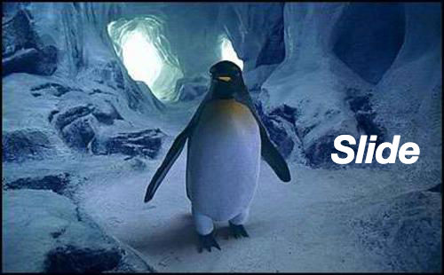

CSS3
On the Move
by Lourdes Montano
CSS3 On the Move - Agenda
What is this?
Usage
Pros & Cons
Browser support - Vendor Prefixes
Types of animations: transition, transform, animation
What is this?

- CSS3 provides the ability to transform, move or animate elements by changing their values.
- You can cause the changes in a property to take place over a period of time.
- CSS3 lets you decide which properties to animate, when the animation will start (delay), how long the transition will last (duration), and how the transition will run (timing-functions).
Usage

- Animations are not just a nice to have, they help the user to have a better UX.
- By creating a smooth animation, the page looks more friendly to the user.
- This means...Friendly = I will come back again.
- Use them for communicating something, use them for purpose.
Usage
- Otherwise....we get back to Flash again!
Browser support
What if the browser doesn't support this?
- The functionality won't be affected if the browser doesn't support animations, it will just look abrupt, but will be still usable.
Yeah yeah...but...Vendor prefixes?
- CSS vendor prefixes are a way for browser makers to add support for new CSS features in a sort of testing and experimentation period.
- -moz- (Firefox)
- -o- (Opera, switching to Webkit soon)
- -ms- (Internet Explorer)
- -webkit- (Safari, Chrome)
- There are more, old prefixes for browsers like Konqueror.
- http://leaverou.github.io/prefixfree/
Types of animations
Transition
- CSS Transitions allows property changes in CSS values to occur smoothly over a specified duration changes values.
- Syntax: transition-property | transition-duration | transition-timing-function | transition-delay
JS Bin
Types of animations
Animation
- Good for what transitions cannot do, for example repeating.
- Internet Explorer 10, Firefox, and Opera supports the @keyframes rule and animation property. Chrome and Safari requires the prefix -webkit-.
- Specify when the change will happen in percent, or the keywords "from" and "to", which is the same as 0% and 100%. 0% is the beginning of the animation, 100% is when the animation is complete.
- You must define the name and the duration of the animation. The default value is 0.
- http://leaverou.github.io/animatable/
Conclusions
Faster and more performant than jQuery animations.
No plugins.
Enhance UX.
Still have to use vendor prefixes (for now).
Less file size.
CSS3 On the Move
Questions?
CSS3 On the Move
Thanks!
lourdes.montano@rga.com
←
→
/
x